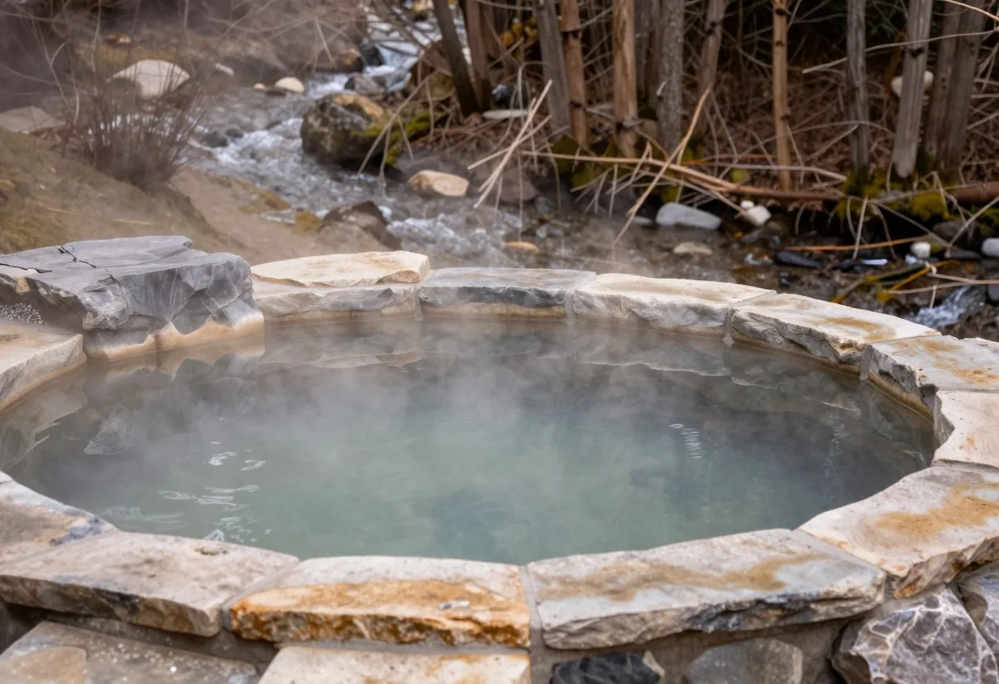
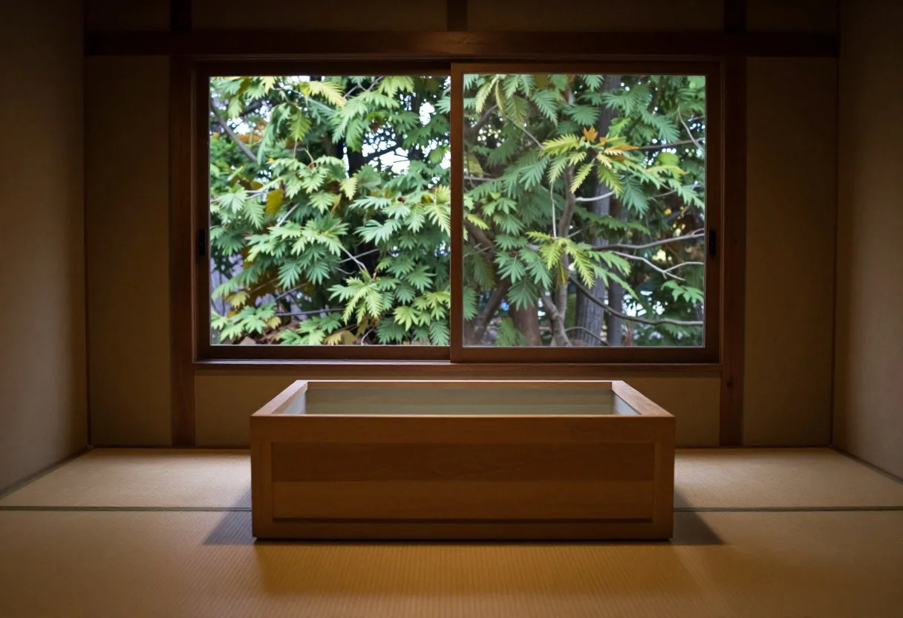

露天風呂
川の音が、湯のなかまで届きます。
杉の木立の向こうに空が開け、時間とともに、湯の色も空の色も変わっていきます。

ONSEN
効能をうたうより、湯につかる時間と、まわりの自然を。
川の音が、湯のなかまで届きます。
杉の木立の向こうに空が開け、時間とともに、湯の色も空の色も変わっていきます。

檜の湯船に、窓の緑が映ります。
灯りは低く、音はやわらかく。朝の光が入る時間は、とくに静かです。
春は新緑、夏は川風、秋は紅葉、冬は雪見。同じ湯でも、季節ごとに見える景色が変わります。

春｜芽吹く山々と、やわらかな朝の空気

夏｜深い緑と、渓流の涼やかな音

秋｜色づく木々と、静かな夕暮れ

冬｜雪景色と、湯けむりに包まれる時間
※入浴時間・貸切風呂などは、見本としての仮の設定です。